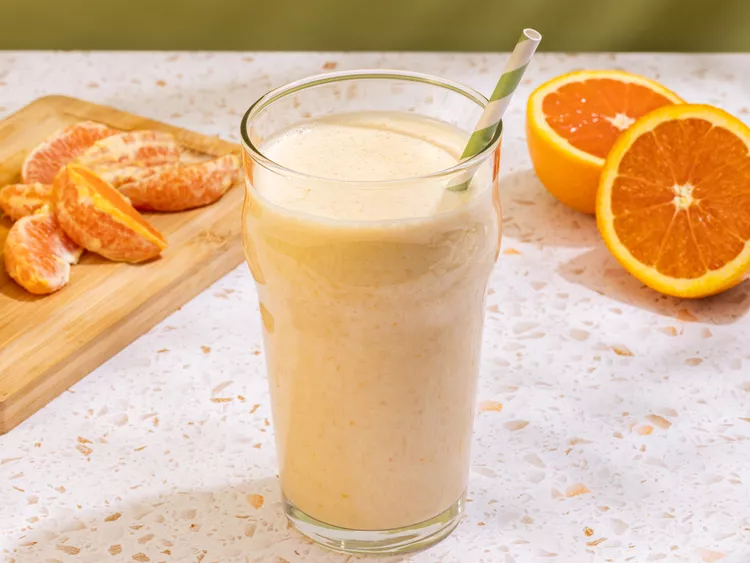

Home
Orange Creamsicle Protein Shake

Made with natural orange for maximum muscle gains
Natural and healthy!
Ingredients
- 1 teaspoon vanilla extract
- 1 scoop vanilla protein powder
- 5 ice cubes
- 1 (5.3 ounce) container plain Greek yogurt
- 1 cup soy milk
- 1 orange - zested, peeled, and separated into segments
Steps
- Gather all ingredients
- Combine orange segments, zest, soy milk, yogurt, ice, protein powder, and vanilla in a blender.
- Blend until smooth.